基礎題
成熟的蓮霧會自然從樹上掉落到地面，蓮霧在掉落的過程中，其速率逐漸增加。上述現象是下列何種能量減少而轉換成其他形式的能量所造成的？
- (A) 動能
- (B) 熱能
- (C) 重力位能
- (D) 彈力(性)位能
看答案與詳解
答案：(C)
減少的重力位能轉換成動能（有空氣阻力時，少部分轉成熱能）→ (C)。
(A) ✘ 動能是增加的。
(B) ✘ 熱能沒有減少。
(D) ✘ 下落過程沒有形變，與彈力位能無關。
力的單位為 N（牛頓），長度的單位為 m（公尺），時間的單位為 s（秒），由單位的組合即可推知該物理量的物理意義。功的定義為作用力乘以物體沿作用力方向的位移，功率的定義為單位時間內所作的功，由此可知下列何者為功率的單位？
- (A) N·s
- (B) N·m·s
- (C) N·m／s
- (D) N·s／m
看答案與詳解
答案：(C)
功率＝功÷時間 → 單位 N·m／s（＝J/s＝W 瓦特）→ (C)。
(A)(B)(D) ✘ 都不是「功÷時間」的組合。
在水平地面上，小沖以大小相同的水平力分別推動質量為 5 公斤與 10 公斤的貨物 10 公尺，水平力的方向與貨物位移的方向相同。若小沖對此兩貨物所作的功分別為 W1 與 W2，則下列何者正確？
- (A) 4W1＝W2
- (B) 2W1＝W2
- (C) W1＝2W2
- (D) W1＝W2
看答案與詳解
答案：(D)
兩次的推力大小相同、位移都是 10 公尺且與力同向 → W1＝W2＝F×10 → (D)。
〔易錯〕質量大的貨物比較「難推」，但只要力與位移相同，作功就相同（差別在於獲得的速度不同）
阿奇提著一個重一公斤的水桶，從幼兒園門口水平等速走 10 公尺到樓梯口，接著他提著水桶沿著長 5 公尺的樓梯等速走上二樓，且一樓的樓高為 3 公尺。若重力加速度為 10 m/s2，下列敘述何者正確？
- (A) 阿奇從門口走到樓梯口，作功為 10 焦耳
- (B) 阿奇從門口走到樓梯口，作功為 100 焦耳
- (C) 阿奇提著水桶上樓梯，對水桶作功為 30 焦耳
- (D) 阿奇提著水桶上樓梯，對水桶作功為 50 焦耳
看答案與詳解
答案：(C)
(A)(B) ✘ 水平等速走時，拉力向上、位移水平，兩者垂直 → 拉力對水桶不作功（0 J）。
(C) ✔ 上樓時，沿拉力方向（鉛直）的位移是樓高 3 m → W＝10×3＝30 J。
(D) ✘ 50 J 是誤用樓梯長 5 m；樓梯長不是沿力方向的位移。
在一槓桿上施一外力 F，施力後槓桿不發生轉動，已知外力 F 施力點及槓桿上 P、Q、R、S 四個點的位置如圖所示，若不計槓桿質量和摩擦力的影響，則此槓桿的支點位置最可能為下列何者？
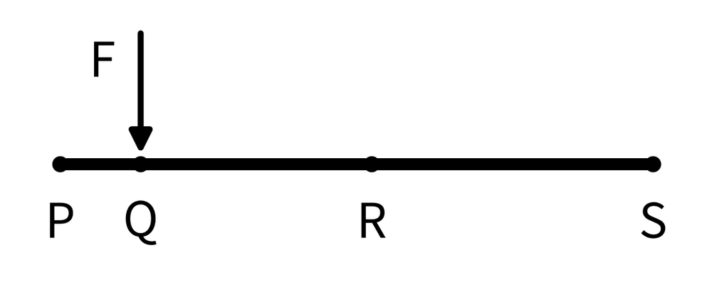
- (A) P
- (B) Q
- (C) R
- (D) S
看答案與詳解
答案：(B)
力矩＝F×力臂 → F≠0 時力臂必須為 0 → F 的作用線要通過支點。
F 作用在 Q 點 → 支點在 Q → (B)。
(A)(C)(D) ✘ 支點在 P、R、S 時，F 的力臂不為 0，槓桿會轉動。
甲、乙兩木塊的質量分別為 2 kg、1 kg，兩者由同一水平高度靜止狀態自由落下，分別掉落至不同高度的水平地板上，如附圖所示。已知當地的重力加速度為 10 m/s2，則兩木塊由靜止狀態自由落下至剛接觸地板時，所減少的重力位能分別為多少？
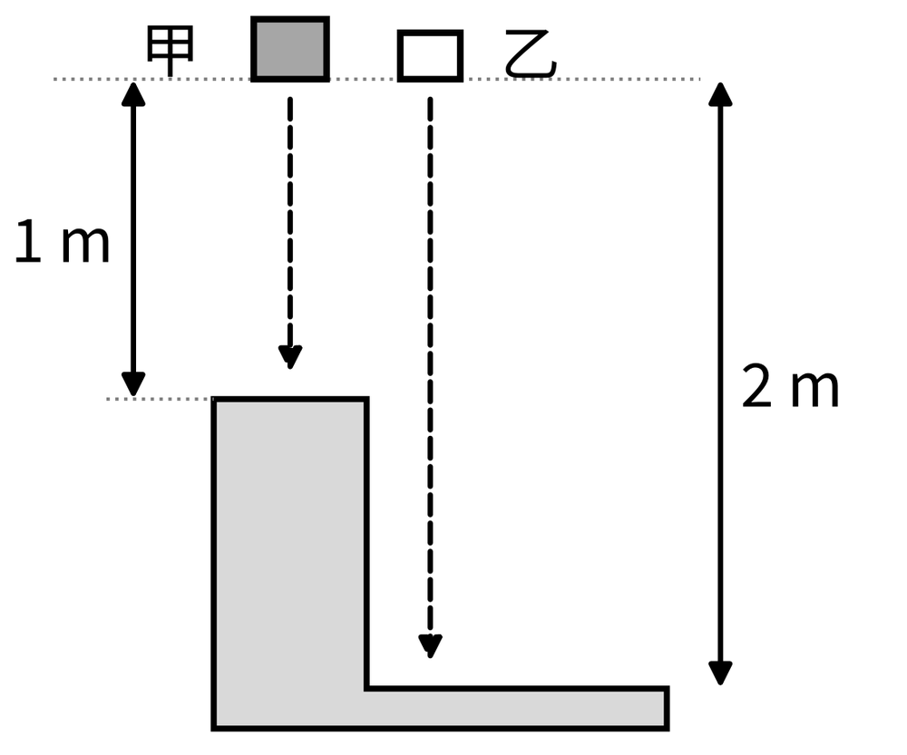
- (A) 甲：1 J，乙：2 J
- (B) 甲：2 J，乙：2 J
- (C) 甲：10 J，乙：20 J
- (D) 甲：20 J，乙：20 J
看答案與詳解
答案：(D)
甲：下落 1 m → 2×10×1＝20 J。
乙：下落 2 m → 1×10×2＝20 J → (D)。
〔易錯〕忘了乘 g（10 m/s2）會誤選 (B)
如圖為羽毛球運動常見基本球路，圖中線段代表羽毛球的運動軌跡，箭頭代表移動方向，由此判斷，哪一種球路的運動過程，羽毛球相對於地面的重力位能只會一直減少？
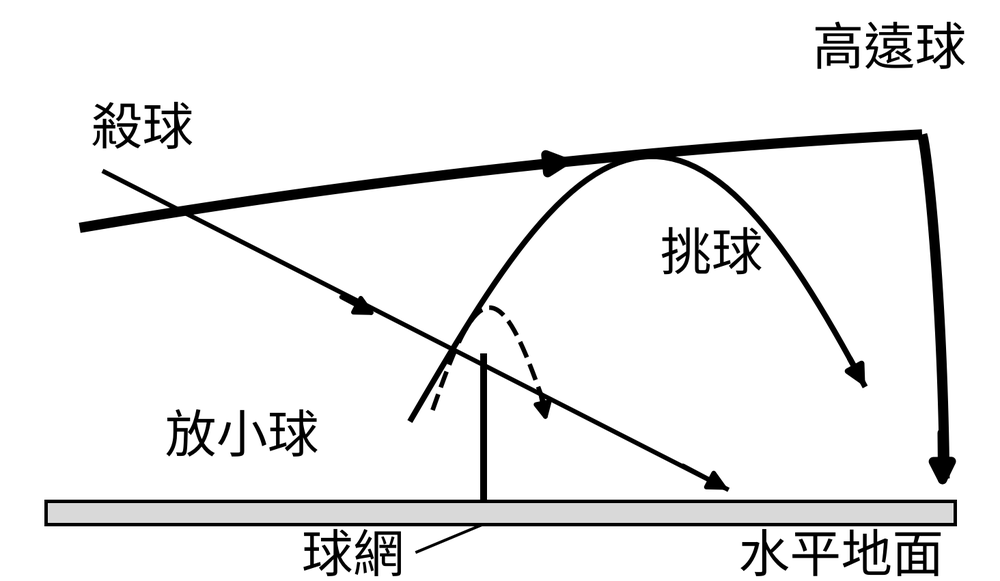
- (A) 殺球
- (B) 挑球
- (C) 高遠球
- (D) 放小球
看答案與詳解
答案：(A)
(A) ✔ 殺球的軌跡是由高處一路往下的直線，高度持續下降。
(B) ✘ 挑球先上升再下降，位能先增後減。
(C) ✘ 高遠球先緩緩上升，到後場才落下。
(D) ✘ 放小球先略微上升，過網後才下降。
阿泉分別進行下列四種不同的運動，在哪一種運動過程中，阿泉由圖中狀態Ⅰ→狀態Ⅱ，他身體的重力位能變化最大？
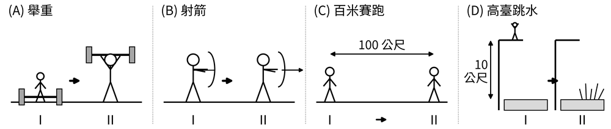
- (A) 舉重
- (B) 射箭
- (C) 百米賽跑
- (D) 高臺跳水
看答案與詳解
答案：(D)
(A) ✘ 舉重由蹲下到站起，身體只升高約 1 公尺以內（槓鈴升高較多，但題目問身體）。
(B) ✘ 射箭前後身體高度不變。
(C) ✘ 百米賽跑在水平跑道上，高度不變。
(D) ✔ 由 10 公尺高臺落到水面，高度下降約 10 公尺，變化最大。
爸爸帶著兒子與女兒到公園玩翹翹板，三人所坐的位置如圖所示，爸爸、兒子、女兒的體重分別為 75 kgw、20 kgw、25 kgw。此時「爸爸的體重使翹翹板產生的力矩大小」大於「兒子與女兒的體重使翹翹板產生的力矩大小和」，翹翹板將倒向爸爸那一端，若他們希望減少兩邊力矩的差距，則下列調整位置的方式，哪一個可能達到他們的目的？
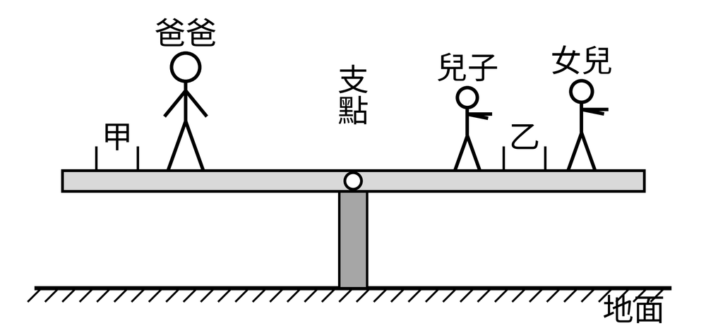
- (A) 爸爸換到位置甲
- (B) 兒子換到位置乙
- (C) 女兒換到位置乙
- (D) 兒子、女兒的位置互換
看答案與詳解
答案：(B)
(A) ✘ 位置甲比爸爸原位置離支點更遠 → 爸爸的力矩變大，差距增加。
(B) ✔ 位置乙比兒子原位置離支點更遠 → 兒子的力矩變大，差距減少。
(C) ✘ 位置乙比女兒原位置離支點近 → 女兒的力矩變小，差距增加。
(D) ✘ 互換後，較重的女兒（25 kgw）坐到較近處、較輕的兒子坐到較遠處 → 兒女力矩和變小（減少 5 kgw×兩位置距離差），差距增加。
小銓有兩把螺絲起子與兩根螺絲釘，如右圖所示。兩兩相較，螺絲起子僅握把的粗細不同，螺絲釘僅螺距大小不同。若小銓想要用最省力的方式將螺絲釘鎖入木板中，他應該選用哪一組工具？
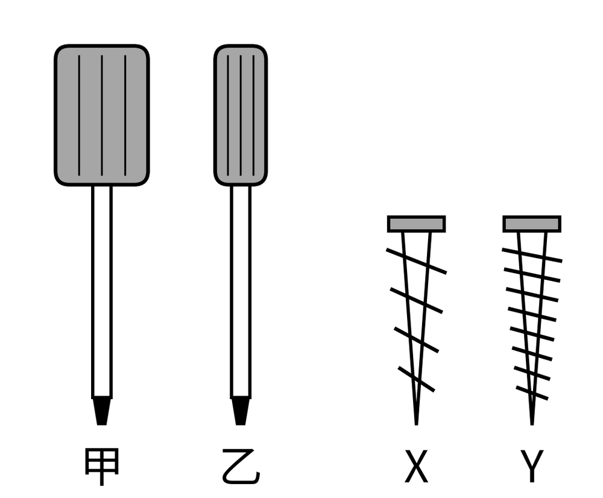
- (A) 甲＋X
- (B) 甲＋Y
- (C) 乙＋X
- (D) 乙＋Y
看答案與詳解
答案：(B)
螺絲釘是螺旋（斜面）：螺紋愈密（螺距愈小），相當於坡度愈緩的斜面，愈省力（但要轉較多圈，較費時）→ 選 Y。
最省力：甲＋Y → (B)。
進階題
施相同大小的力將一物自甲地分別沿著附圖中矩形的Ⅰ、Ⅱ、Ⅲ三條路徑移動至乙地，整個過程都在性質相同的水平面上，且施力方向始終與移動軌跡保持平行。WⅠ、WⅡ、WⅢ 分別代表在Ⅰ、Ⅱ、Ⅲ三條路徑上，施力對物體所做的功，則 WⅠ、WⅡ、WⅢ 三者大小關係為何？
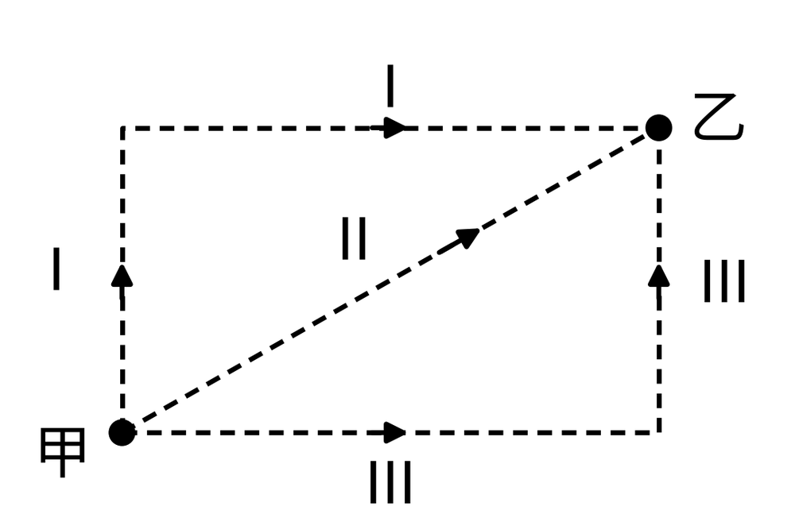
- (A) WⅠ＞WⅡ＞WⅢ
- (B) WⅠ＝WⅡ＝WⅢ
- (C) WⅠ＝WⅢ＞WⅡ
- (D) WⅡ＞WⅢ＝WⅠ
看答案與詳解
答案：(C)
設矩形長 a、寬 b：路徑Ⅰ、Ⅲ 長都是 a＋b；路徑Ⅱ是對角線，比 a＋b 短（三角形兩邊和大於第三邊）。
→ WⅠ＝WⅢ＞WⅡ → (C)。
〔易錯〕起點、終點相同就以為功相同；本題力的方向隨路徑改變，要用路徑長計算
將某物體放在粗糙的水平桌面上，並對物體施一水平作用力，當施力逐漸增加至 10 N 時，物體開始運動，此時物體與桌面間的動摩擦力為 5 N；當小華以 20 N 的水平作用力作用於此物體時，經過 2 秒之後物體移動 4 m，則此時物體所獲得的動能為多少焦耳？
- (A) 40
- (B) 60
- (C) 80
- (D) 160
看答案與詳解
答案：(B)
合力＝20－5＝15 N，方向與位移相同。
合力作的功＝物體增加的動能 → 15×4＝60 J → (B)。
驗算：施力作功 20×4＝80 J，其中 5×4＝20 J 被摩擦力轉成熱能，剩 60 J 成為動能。
〔易錯〕直接用 20×4＝80 J 而選 (C)
若花一固定的拉力 80 N，將質量 10 公斤的木塊，沿著圖所示的粗糙斜面等速度拉至 1 公尺的高處，則過程中各力對木塊作功的情形，下列敘述何者正確？（g＝10 m/s2）
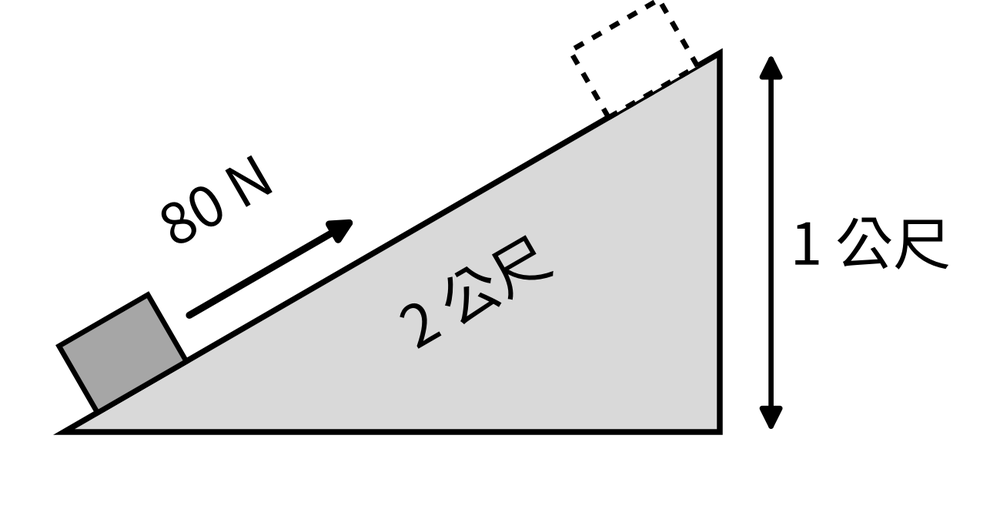
- (A) 拉力對木塊作功 80 焦耳
- (B) 合力對木塊作功 160 焦耳
- (C) 重力對木塊作功 −160 焦耳
- (D) 摩擦力對木塊作功 −60 焦耳
看答案與詳解
答案：(D)
(A) ✘ 拉力沿斜面，作功＝80×2＝160 J。
(B) ✘ 等速度 → 合力為 0 → 合力作功 0（動能不變）。
(C) ✘ 重力作功＝−100×1＝−100 J。
(D) ✔ 各力作功總和為 0：160－100＋W摩＝0 → W摩＝−60 J（正向力與位移垂直，不作功）。
如圖所示，一個半圓形軌道固定在水平桌面，軌道兩端均距水平桌面高度 0.5 m，將一顆小球在距水平桌面高度 1.0 m 處，由靜止自由落下滑入半圓形軌道，若不計任何摩擦力或阻力，且小球滑過軌道最低點後，向上達到最高點時的動能為 0，則最高點距水平桌面高度為下列何者？
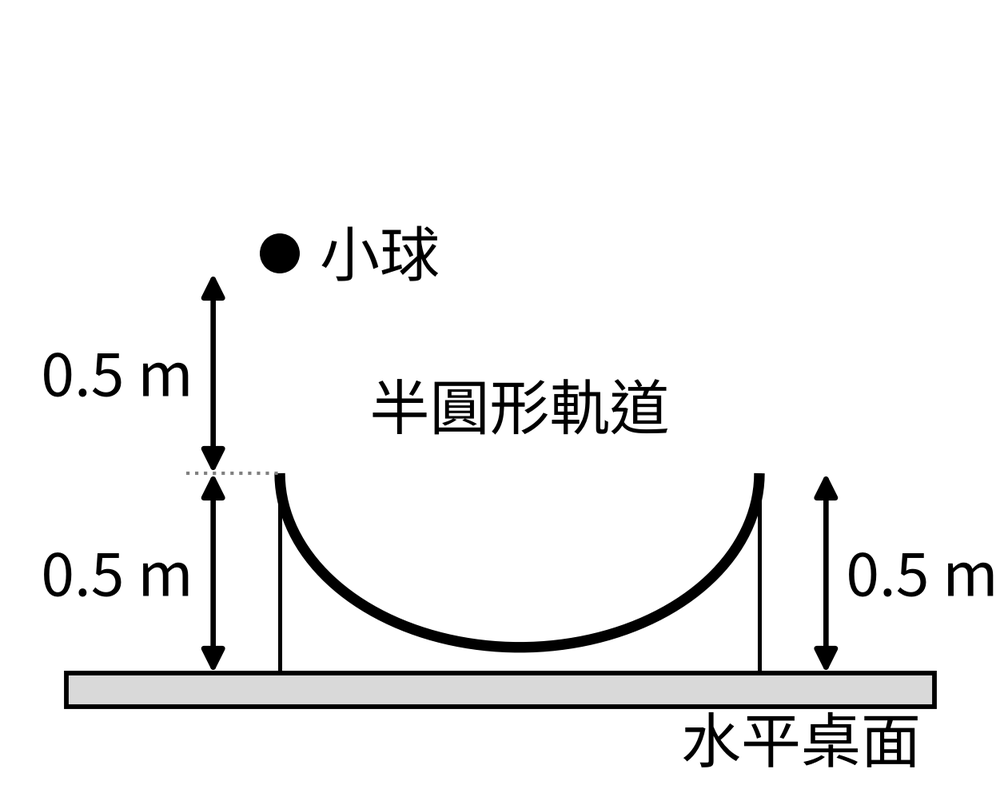
- (A) 0.25 m
- (B) 0.5 m
- (C) 1.0 m
- (D) 1.5 m
看答案與詳解
答案：(C)
開始時：靜止於 1.0 m 高處，動能 0。
最高點：動能也是 0 → 位能必須與開始時相同 → 高度也是 1.0 m（小球衝出軌道右端後，再往上升 0.5 m）→ (C)。
(B) ✘ 0.5 m 是軌道端點高度，小球到那裡時仍有動能。
附圖為小育在海邊依序拍攝的四張照片，其角落的標號表示拍攝的先後順序，四張照片均在相同位置、相同角度下拍攝，已知照片中的小威在練習投籃，騎車的阿祁，在拍攝過程中沿著欄杆旁的筆直道路作「等速度運動」。觀察照片右方小威所投出的籃球，在哪兩張照片中，籃球相對於水平地面的重力位能是相等的？
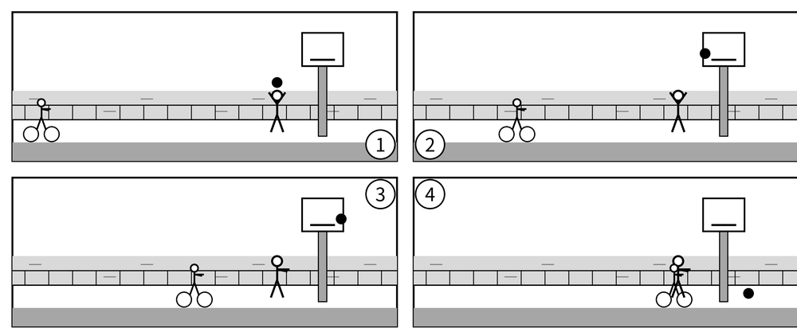
- (A) 照片 1 及照片 2
- (B) 照片 2 及照片 3
- (C) 照片 3 及照片 4
- (D) 照片 4 及照片 1
看答案與詳解
答案：(B)
照片 1：球在小威手中（頭頂附近）；照片 2：球在籃框左側；照片 3：球在籃框右側；照片 4：球已落到地面附近。
照片 2、3 的球都在籃框高度 → 高度相同 → 位能相等 → (B)。
（騎車的阿祁只是干擾資訊）
如圖所示，在一個槓桿兩側分別以細繩吊掛臘肉與烤鴨，吊掛後槓桿仍保持水平平衡。此時臘肉使槓桿產生 0.2 kgw-m 的逆時針力矩，若槓桿、細繩的質量與支點處的摩擦力皆忽略不計，則下列敘述何者正確？
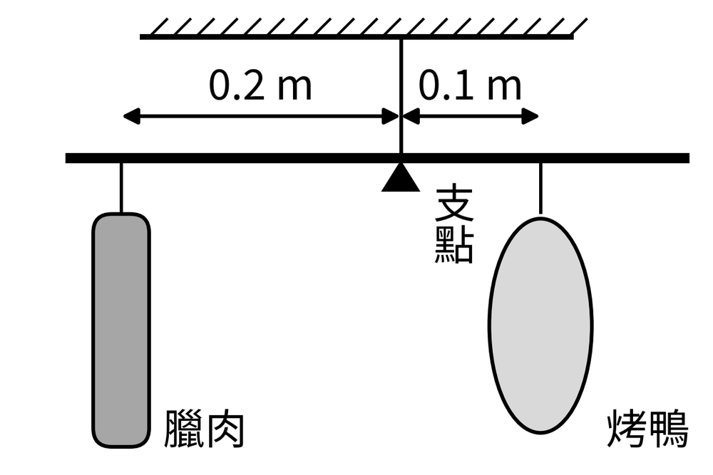
- (A) 臘肉的質量為 2 kg
- (B) 烤鴨的質量為 4 kg
- (C) 烤鴨產生的順時針力矩為 0.2 kgw-m
- (D) 烤鴨產生的順時針力矩為 0.4 kgw-m
看答案與詳解
答案：(C)
(C) ✔ 烤鴨產生的順時針力矩＝臘肉的逆時針力矩＝0.2 kgw-m；(D) ✘。
(A) ✘ 臘肉重＝0.2÷0.2＝1 kgw → 質量 1 kg。
(B) ✘ 烤鴨重＝0.2÷0.1＝2 kgw → 質量 2 kg。
一槓桿支點在中央，此槓桿均分為六等分，以細繩吊掛 3 個重量均為 w1 的星形金屬塊與 2 個重量均為 w2 的鐘形金屬塊，此時槓桿保持水平平衡，吊掛位置如附圖所示。若槓桿、細繩的重量與支點處的摩擦力忽略不計，則 w1：w2 應為下列何者？
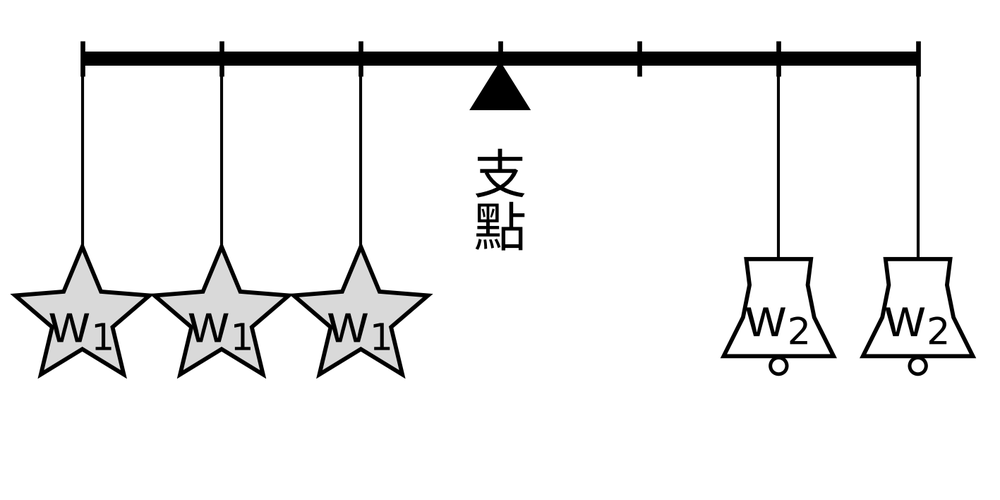
- (A) 2：3
- (B) 3：4
- (C) 4：5
- (D) 5：6
看答案與詳解
答案：(D)
左側星形塊距支點 3、2、1：逆時針力矩＝w1×(3＋2＋1)＝6w1。
右側鐘形塊距支點 2、3：順時針力矩＝w2×(2＋3)＝5w2。
平衡：6w1＝5w2 → w1：w2＝5：6 → (D)。
如圖（一），欲將某物體向上提升 3 公尺，最少須施力 Fa，現若將物體改置於光滑無摩擦之斜面上，如圖（二），同樣欲提升 3 公尺，則沿斜面之抗力 Fb 的敘述何者正確？
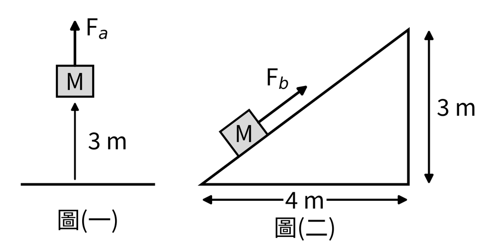
- (A) Fb＝0.6Fa，較省力，所作的功與 Fa 相同
- (B) Fb＝1.6Fa，較省時，所作的功比 Fa 小
- (C) Fb＝0.75Fa，較費時，所作的功較 Fa 大
- (D) Fb＝1.3Fa，較省時，所作的功比 Fa 小
看答案與詳解
答案：(A)
斜面高 3 m、底 4 m → 斜面長＝5 m（3：4：5 直角三角形）。
光滑斜面：Fb×5＝W×3 → Fb＝0.6W＝0.6Fa，較省力、較費時。
兩種方法對物體作的功都等於 W×3（簡單機械不省功）→ (A)。
輪軸如圖所示，已知輪半徑 40 公分，今欲吊起 200 克重的物體時，至少需施力 F 若干克重？
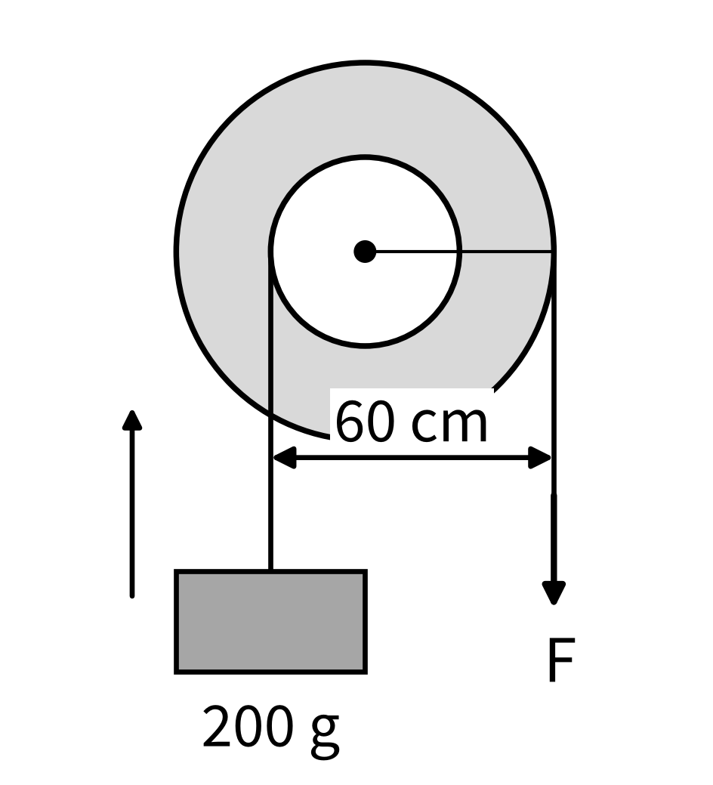
- (A) 20
- (B) 40
- (C) 100
- (D) 400
看答案與詳解
答案：(C)
軸半徑 r＝60－40＝20 cm。
力矩平衡：F×40＝200×20 → F＝100 克重 → (C)。
〔易錯〕把 60 cm 當成輪半徑
如圖所示，在一個滑輪組的動滑輪下方懸掛一個 20 kgw 的物體，在定滑輪一端施力 10 kgw，於 10 秒內等速度拉下繩長 2 m，最後物體上升高度 1 m。若滑輪及繩子的重量均可忽略，不計摩擦力，重力加速度大小為 9.8 m/s2，在此 10 秒內施力所做的功率為多少瓦特？
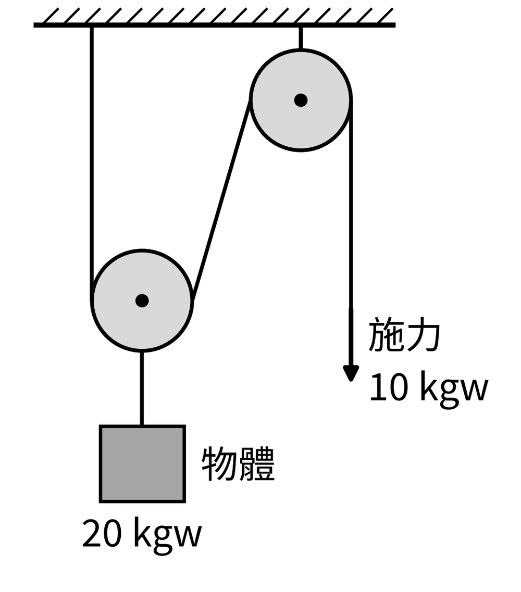
- (A) 4.9
- (B) 9.8
- (C) 19.6
- (D) 39.2
看答案與詳解
答案：(C)
施力作功 W＝98×2＝196 J（＝物體增加的位能 20×9.8×1＝196 J，不省功）。
功率 P＝W／t＝196÷10＝19.6 W → (C)。
〔易錯〕用物體上升的 1 m 乘以施力 10 kgw，得 9.8 W
會考／素養題
高台上架設一彈弓，將彈弓的弦拉長後，朝斜上方發射一小圓石如圖所示，虛線代表小圓石的飛行軌跡，若弦拉到最長時的彈性（力）位能為 E1，小圓石在最高點瞬間相對於地面的重力位能與動能總和為 E2，小圓石著地前瞬間的動能為 E3，若忽略空氣阻力影響，則 E1、E2、E3 的大小關係應為下列何者？
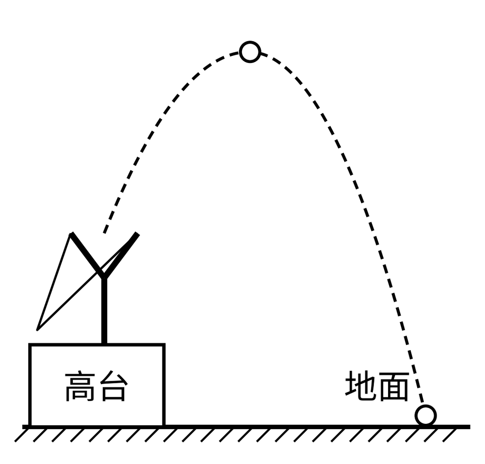
- (A) E1＜E2＜E3
- (B) E1＝E2＝E3
- (C) E1＝E2＜E3
- (D) E1＜E2＝E3
看答案與詳解
答案：(D)
→ 剛射出時的力學能＝E1＋U0。
飛行中只有重力作功，力學能守恆：最高點 E2＝E1＋U0；著地前位能為 0，E3＝E1＋U0。
→ E1＜E2＝E3 → (D)。
〔易錯〕忘了高台的高度，誤選 (B)
氫氣因燃燒過程不會產生二氧化碳，是能源轉型的目標之一。依據製造方法的不同，可將氫氣分成幾類，其中四類如表所示。在減碳環保的要求下，期望產生的氫氣要盡量是綠氫。依據表中資訊，下列說明何者最合理？
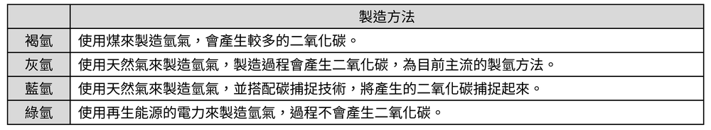
- (A) 褐氫和灰氫在製造過程會使用化石燃料，而藍氫和綠氫皆沒有
- (B) 將風力發電所產生的電能，用來電解水而產生的氫氣屬於綠氫
- (C) 褐氫和灰氫作為燃料，在燃燒過程需要氧氣，而藍氫和綠氫則不用
- (D) 氫氣被分成表中的四類顏色，主要是依據製造過程消耗掉的電能多寡來分類
看答案與詳解
答案：(B)
(B) ✔ 風力發電屬於再生能源，用其電力電解水製氫，過程不產生 CO2 → 綠氫。
(C) ✘ 不論哪一類，都是氫氣，燃燒時都需要氧氣（2H2＋O2 → 2H2O）。
(D) ✘ 表中的分類依據是「製造方法（原料、能源）與是否產生／捕捉 CO2」，不是消耗電能的多寡。
附圖為甲和乙兩國在 2015 年，以及 2030 年時預計達成的發電方式比例圖，參考表(六)資料，假設沿用同樣的發電機組，僅考慮發電方式的比例改變，不考慮其他因素，則與 2015 年相比，預測兩國在 2030 年平均每度電的碳排放量會如何變化？
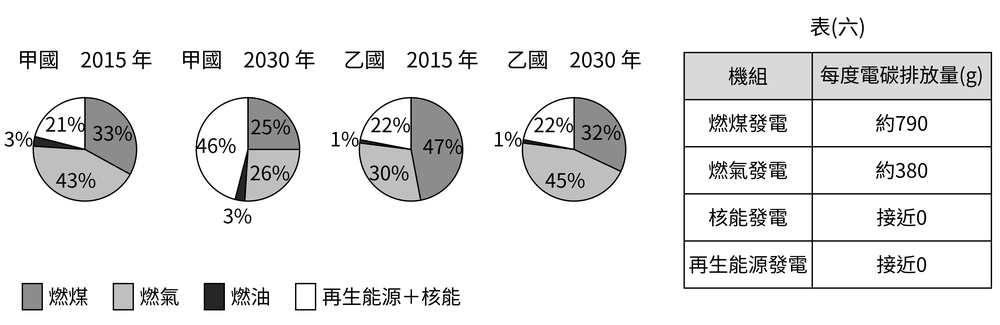
- (A) 兩國都會增加
- (B) 兩國都會減少
- (C) 甲國增加，乙國減少
- (D) 甲國減少，乙國增加
看答案與詳解
答案：(B)
甲國 2015：0.33×790＋0.43×380≒261＋163＝424 g；2030：0.25×790＋0.26×380≒198＋99＝297 g → 減少。
乙國 2015：0.47×790＋0.30×380≒371＋114＝485 g；2030：0.32×790＋0.45×380≒253＋171＝424 g → 減少。
兩國都減少 → (B)。
〔易錯〕乙國燃氣比例增加就以為碳排增加；燃煤每度電碳排約為燃氣的 2 倍，燃煤比例下降較有影響
▲ 第 7-24～7-25 題為題組：臺灣西部海岸建構多部風力發電機，透過風力發電機可以將風能轉換為電能，而在轉換過程中，能量無法百分之百轉換。科學上會使用功率係數 Cp 來呈現發電機葉片由風力獲取能量的效率，可表示如下：Cp＝發電機葉片由風力中獲取的功率／通過發電機前風力原始的功率。圖(二十九)為風力發電過程的示意圖，原始的風速為 v1，在通過發電機後，最後風速變為 v2，德國科學家貝茲通過理論計算，獲得理想情形下 Cp 與 (v2／v1) 的理論關係，其關係如圖(三十)所示。
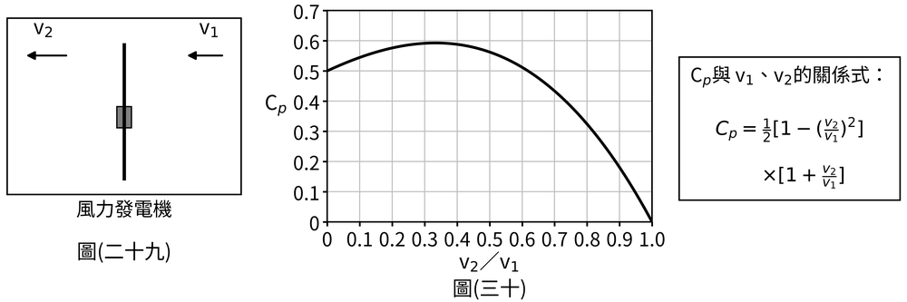
根據本文第一段的資訊，下列有關 Cp 的敘述，何者最合理？
- (A) 風力發電機葉片轉動的速率愈快，Cp 值會愈大
- (B) 風力發電機葉片轉動的速率愈快，Cp 值會愈小
- (C) 風力發電機葉片由風力獲得能量的比例愈高，Cp 值會愈大
- (D) 風力發電機葉片由風力獲得能量的比例愈高，Cp 值會愈小
看答案與詳解
答案：(C)
比例愈高 → Cp 愈大 → (C)；(D) ✘。
(A)(B) ✘ 第一段只定義了能量比例，沒有提到葉片轉速與 Cp 的關係。
根據圖(三十)，假設原始的風速 v1 為 10 m/s，通過發電機後，最後的風速 v2 為多少時，會接近最大的 Cp 值？
- (A) 0
- (B) 3.3 m/s
- (C) 5.9 m/s
- (D) 10 m/s
看答案與詳解
答案：(B)
v2≒0.33×10≒3.3 m/s → (B)。
(C) ✘ 0.59 是 Cp 的最大值，不是 v2／v1；(A)(D) 對應的 Cp 為 0.5 與 0，都不是最大。
阿斌到某復古風格的餐廳聚餐，他發現餐廳內的牆邊斜立一個鐵製支架，上方圓孔中插入一根木棒，木棒一端懸掛一顆燈泡，另一端頂住牆面使其保持靜止不動，如圖（一）所示。圖（二）表示阿斌從面對此牆面的方向觀察此裝置的情形。若鐵製支架圓孔與木棒只有一個接觸點，以此接觸點為支點，則關於木棒所受力矩的情形，下列敘述何者正確？
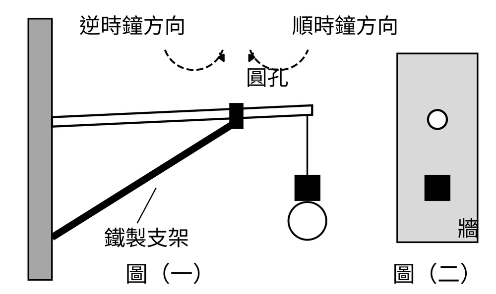
- (A) 只有順時鐘力矩，逆時鐘力矩為零
- (B) 只有逆時鐘力矩，順時鐘力矩為零
- (C) 順時鐘力矩大於逆時鐘力矩，且均不為零
- (D) 順時鐘力矩等於逆時鐘力矩，且均不為零
看答案與詳解
答案：(D)
以圓孔接觸點為支點：右端燈泡的重量產生順時鐘力矩（不為零）；左端頂住牆面，牆對木棒的作用力產生逆時鐘力矩，兩者大小相等 → (D)。
(A)(B)(C) ✘ 若力矩不平衡，木棒會轉動。
如圖所示，小明坐在滑輪下方的吊椅上，他的體重與吊椅重量總計 60 公斤重，繩重不計。已知繩子所能承受最大拉力為 40 公斤重，超過就會斷裂。則甲、乙二圖中，小明是否會因繩子斷裂而摔下來？（假設繩子都呈垂直狀態）
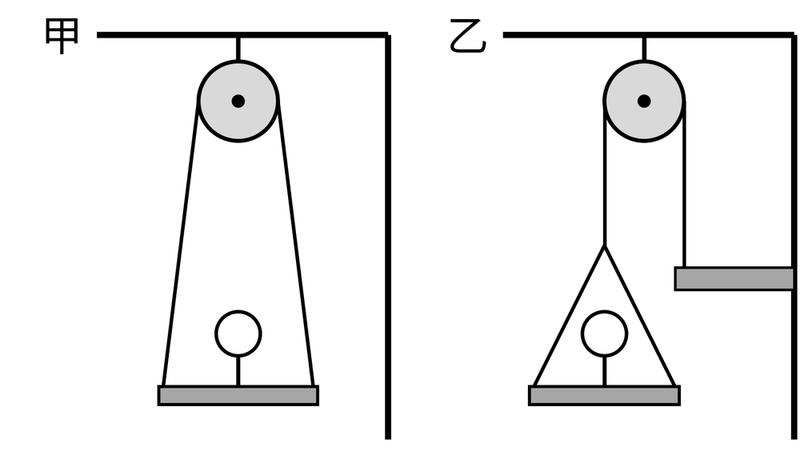
- (A) 甲、乙均會斷裂
- (B) 甲、乙均不會斷裂
- (C) 甲會斷裂、乙則不會
- (D) 甲不會斷裂，乙會斷裂
看答案與詳解
答案：(D)
甲：繩子繞過滑輪，兩端都綁在吊椅上 → 兩段繩子共同拉住 60 公斤重 → 每段張力 30 公斤重＜40，不會斷。
乙：只有一段繩子拉住吊椅（另一端綁在牆上）→ 張力＝60 公斤重＞40，會斷 → (D)。
小明與同學至野外露營，有一顆大石頭在營地的中央，為了將大石頭移開，他利用一根堅硬且重量分布均勻的木棍，以一顆小石頭當作支點，如圖所示。若他在 x、y、z 三點分別施以最小的向下力量將石頭移動時，施力在哪一點時，石頭移動瞬間當支點的小石頭受力最大？
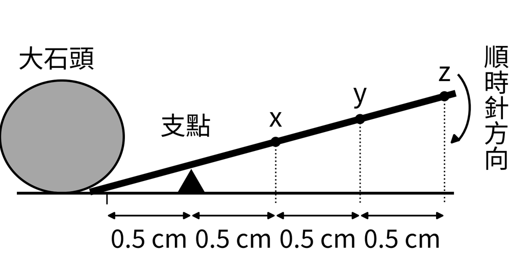
- (A) x 點
- (B) y 點
- (C) z 點
- (D) 三點相同
看答案與詳解
答案：(A)
施力 F 的力臂：x 為 0.5 cm、y 為 1.0 cm、z 為 1.5 cm → 力臂最短的 x 需要的施力最大。
支點小石頭支撐的力＝R＋F＋木棍重（向下的力總和）→ F 最大時受力最大 → x 點 → (A)。
〔易錯〕以為支點受力只與大石頭有關；施力本身也壓在支點上